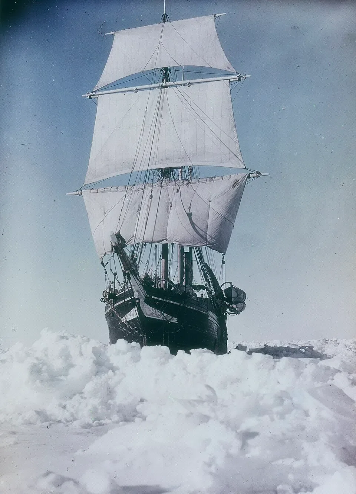
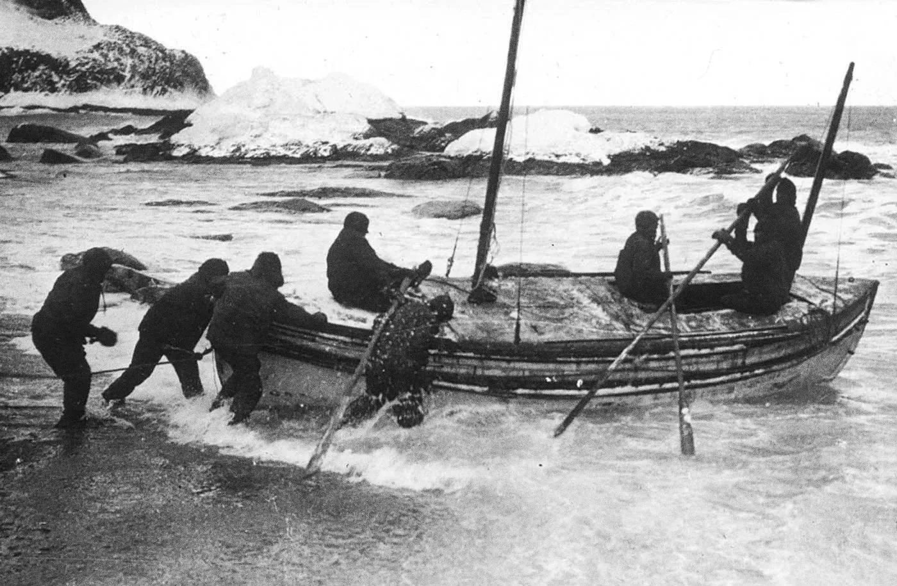

By endurance we conquer
on Ernest Shackleton's voyage


So today I watched this The endurance documentary, which is about the Ernest Shackleton’s Antartic expedition. I’ve been wanting to read that book since more than 1 year, but it’s not available here in Nepal.
Spoiler Alert!
One thing struck me.
It’s how optimism really opens the door. How being an optimist and having a hope keeps you going. When Ernest decided to return back, they had every reasons to give up, to say that we can’t go back, to lose the hope. No one would’ve blamed him. They were on the middle of nowhere. What do you do? you have 27 men with you, and you gotta bring all of em back alive. Till the very end, it was extremely hard. Ernest felt every reasons in the world to say “That’s it.”.
Losing the hope will kill you. Being an optimist, having a hope, even though little reasons to keep you going will turn everything around. Atleast that will make you feel alive even though you’re almost finished.
It reminds of war stories like The Pianist, Viktor Frankl, etc. Giving up the hope and dying is so easy. Keeping the hope alive, having an optimism that keeps you going, truly believing that light will come is soo hard.
I know sometimes, or a lot of times, quitting is better. But you need to feel it. You shouldn’t regret it. Doing something very big in the world requires having an optimism for a very long period of time.
By endurance we conquer.